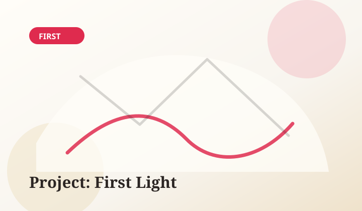
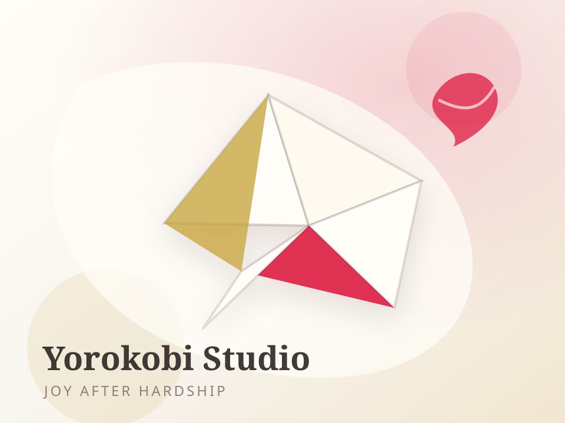
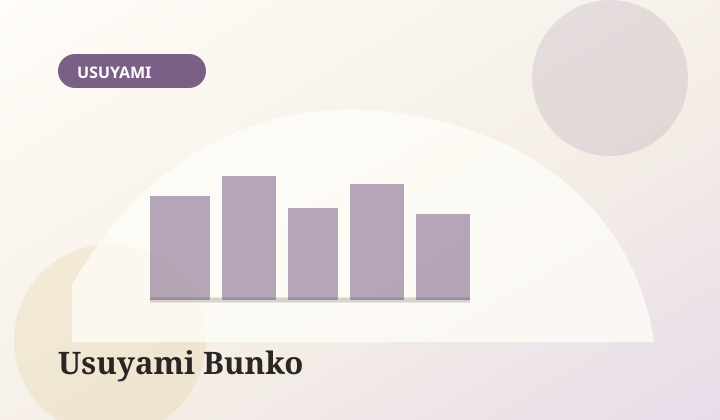
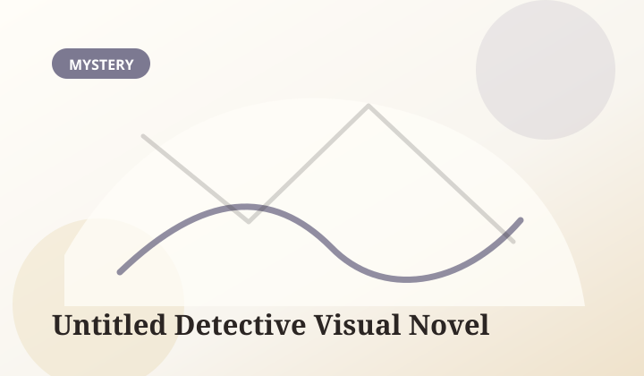

Project: First Light
An emotional visual novel about small acts of courage, family wounds, and the first fragile step toward joy.
- GenreEmotional Visual Novel
- EngineRen'Py
- ReleaseTBA
- FormatFree release planned
Joy earned through overcoming hardship. We are a small independent studio crafting sincere visual novels about memory, pain, tenderness, and the fragile hope that remains after difficult days.

An honest introduction to the studio's foundation, direction, and long-term commitment to emotional storytelling.
Read on adriansantos.blogEarly tests for interface, background direction, music timing, and a production rhythm that can grow slowly.
Read on adriansantos.blogA short reflection on the kind of stories Yorokobi Studio wants to protect: gentle, painful, and hopeful.
Read on adriansantos.blog
An emotional visual novel about small acts of courage, family wounds, and the first fragile step toward joy.

A quiet collection of interlinked stories set around a small library at dusk, where readers leave more than books behind.

A quiet mystery project exploring atmosphere, branching choices, and the slow pressure of hidden truths.
We believe stories can hold pain without losing tenderness.
Stories shaped by quiet conflict, inner growth, and the difficult beauty of continuing forward.
Characters are not puzzles to solve, but people to understand with patience and respect.
Joy matters more when it is not easy. We want our works to honor that fragile arrival.
Small productions can still be careful, thoughtful, and emotionally honest.
The studio is in its earliest phase. We are shaping our tools, our voice, and our first prototypes before anything is ready to be played.
A visual language built around the paper crane, sakura, and the kanji 喜悦 — calm, delicate, and emotionally honest.
Learning scene direction, UI rhythm, and music timing through small, deliberate experimental builds.
Drafting the emotional core of Project: First Light — slowly, so it can find its proper tone.
Yorokobi Studio is still small, but every page, scene, track, and sketch is part of a longer path. Read our development notes, explore the early projects, or reach out for collaboration.